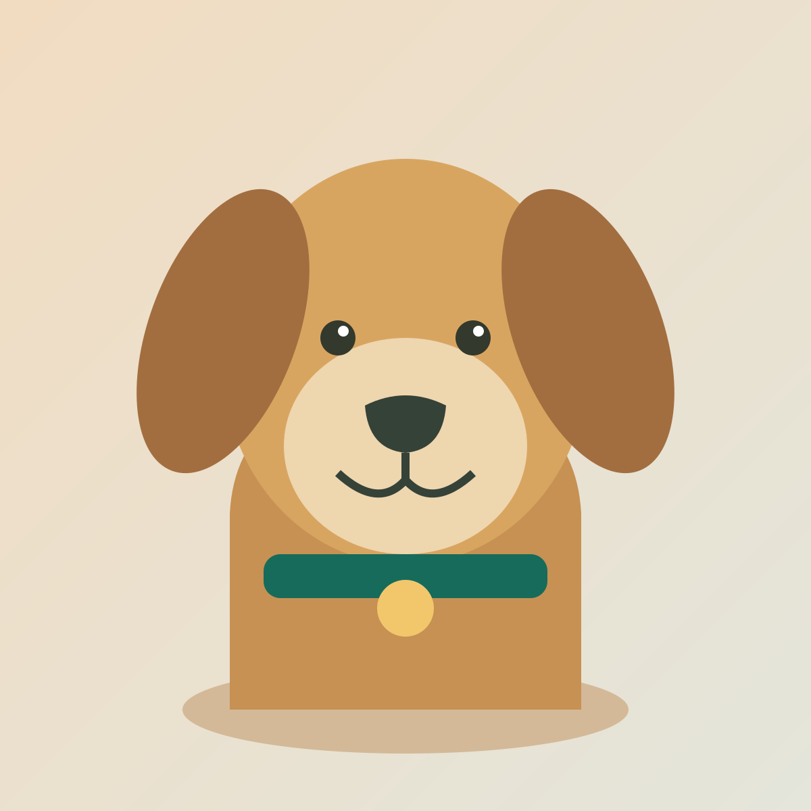

Atención para mascotas · Agenda en línea
Cuidarles bien.
Organizarlo mejor.
Encuentra un servicio, consulta las fechas disponibles y reserva un momento para el cuidado de tu mascota.

Medicina · Higiene · BienestarDisponibilidad real
Los horarios se calculan con la agenda del centro.
Cuidado a su medida
Atención médica, baño, peinado, pelo y uñas.
Reserva con confianza
Cada cita se confirma sin solapar al profesional.
Explorar
Un momento para cada cuidado
Consulta los servicios publicados y elige el horario que mejor te funciona.
Consultando publicaciones…
Antes de empezar
¿Cómo se confirma una cita?
Selecciona servicio, fecha y hora. Al confirmar, el servidor comprueba nuevamente el horario y guarda la reserva.
¿Puedo cancelar mi cita?
Sí. En «Mi cita», utiliza la referencia y el código privado que recibiste al reservar. El horario vuelve a quedar disponible.
¿Por qué no veo horarios disponibles?
Puede que ese día no tenga franjas configuradas, esté bloqueado o las citas ya estén ocupadas. Prueba otra fecha o servicio.